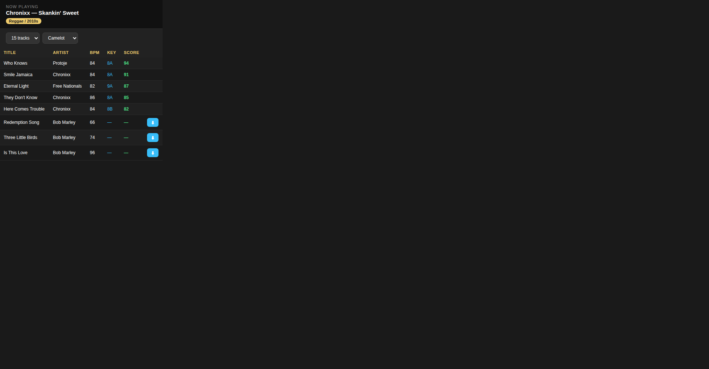

I'm a DJ. I got tired of staring at a library of 10,000 tracks mid-set trying to figure out what plays next. So I built the tool I always wanted — it watches what you're playing in Serato and tells you what to play next.

The live window — follows your Serato set, drag suggestions to the deck
The story
I used to DJ on Algoriddim djay, and their Match feature was magic — play classic rock, get more classic rock. Play old school hip-hop, stay in that pocket. When I switched to Serato, nothing came close. So I built CrateMatch to do it better: it doesn't just match BPM and key, it understands genre pockets, learns from your past sets, and even finds tracks you don't own yet.
What it does
Live window — small always-on-top panel that follows your Serato set in real time
Three-layer matching — audio compatibility (BPM, key, energy) + genre pocket + your own past transition patterns
Drag to deck — drag any suggestion straight onto a Serato deck, mid-set, no switching windows
One-click download — don't own a suggested track? Hit ⬇, it grabs it from YouTube to your folder
Never repeats — tracks you've already played tonight are filtered out automatically
Sortable columns — click BPM, Key, Energy, Artist to sort. Switch key display between Camelot, Classic, and Open Key
How to use it
Download the DMG below, drag to Applications. First launch: macOS will say it "could not verify" the app (it's unsigned) — click Done, then go to System Settings → Privacy & Security, scroll down and click "Open Anyway". You only do this once.
Point it at your music folder — first scan analyzes every track (takes a while, grab coffee)
Open Serato, start DJing — the CrateMatch window follows along automatically
Drag suggestions to your deck, or hit ⬇ to download tracks you don't have yet
Optional: run the genre tagger overnight for smarter pocket matching
Got feedback?
I'm building this for working DJs — if something's off, if a suggestion was terrible, or if you want a feature, open an issue on GitHub. I read everything.